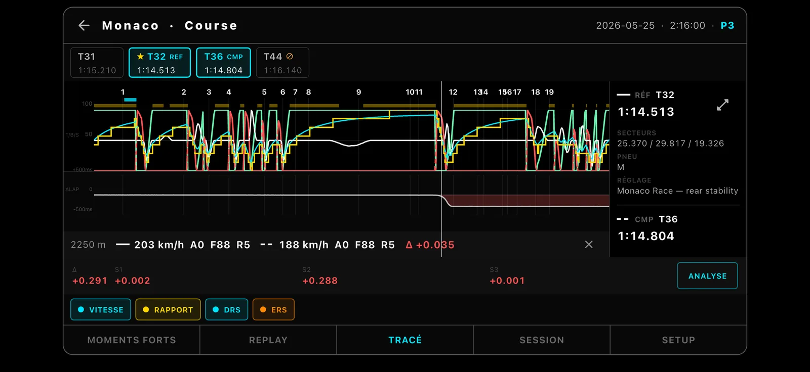

Gratuit
- Le tracé en direct plein écran du tableau de bord
- Le TRACÉ de l’historique pour votre session la plus récente
Comment ça marche
Choisissez vos tours, comparez une référence à un autre tour, zoomez, déplacez-vous et passez en plein écran, en direct sur le mur des stands ou plus tard dans l’historique.
Les deux vues partagent le même graphique, les mêmes gestes et les mêmes pastilles de tour : ce que vous apprenez dans l’une sert dans l’autre.

Les tours d’entrée et de sortie des stands et un dernier tour inachevé figurent dans la liste, marqués comme partiels, mais ne sont jamais proposés comme référence ni comme comparaison.
Les boutons sous le graphique (SPEED, GEAR, DRS, ERS) affichent ou masquent ces courbes. Un canal que le jeu n’a pas envoyé n’est pas dessiné, et son bouton indique qu’il n’a pas été enregistré.
Le panneau à côté du graphique donne le temps, les secteurs, le pneu et le réglage du tour de référence, et le temps du tour comparé. Sur un téléphone tenu à la verticale, ces détails passent dans un bandeau au-dessus du graphique.
Touchez le bouton d’agrandissement dans le coin supérieur droit du graphique. Le tracé remplit l’écran avec sa légende et ses commandes ; sur iPhone, il préfère le paysage. Touchez le bouton de fermeture pour revenir exactement où vous étiez.
Pour les sessions F1 26 qui ont enregistré l’aéro active ou l’énergie ERS, le TRACÉ de l’historique ajoute une ligne ÉNERGIE & RYTHME. Elle ouvre jusqu’à quatre constats tirés de vos tours comparables, chacun avec ce qui s’est passé, pourquoi c’est important et quoi essayer ensuite.